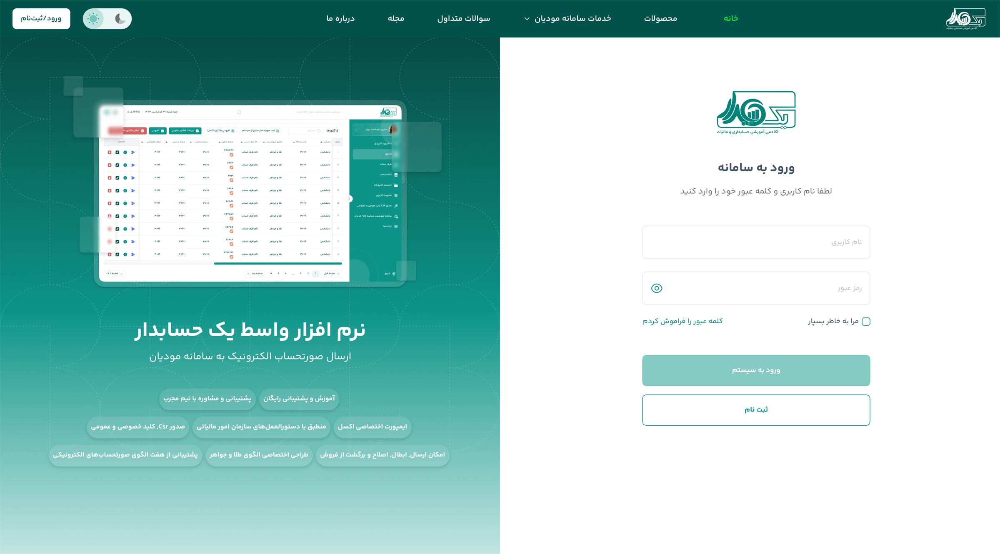
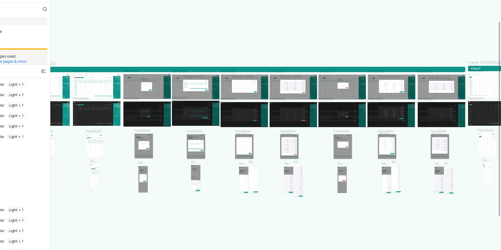
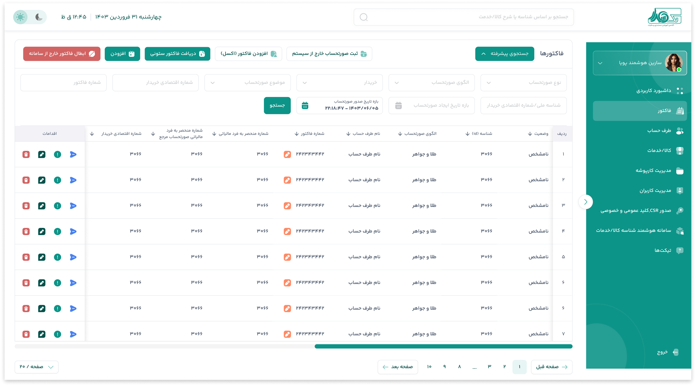
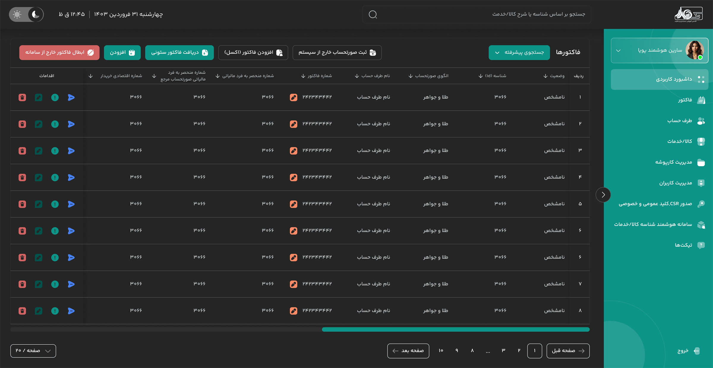
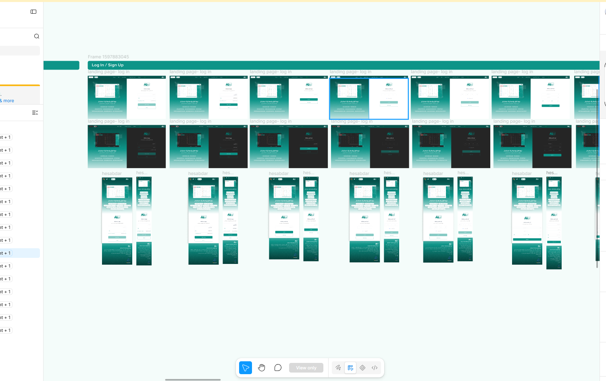
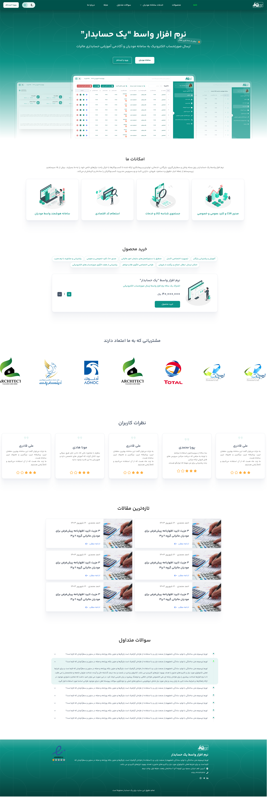
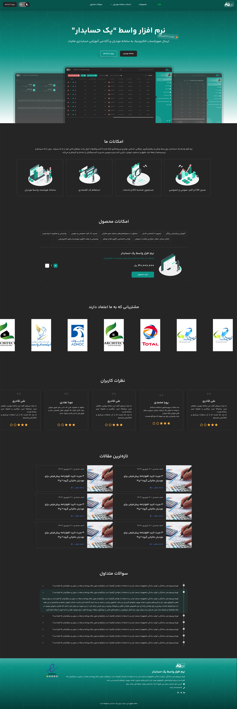

CASE STUDY / 07 · TWO-MONTH PROJECT
Hesabdar
A clearer accounting workspace for registering and sending company invoices to the tax authority.

01 / OVERVIEW
Make tax-invoice work feel more manageable.
Hesabdar is an accounting tool for companies to register, manage, and submit invoices for tax reporting. I worked from the client’s requirements through flow simplification to the final responsive interface, landing page, and reusable component system.
- My role
- Product Designer
UI/UX Designer - Ownership
- Requirements framing, flow simplification, UI/UX, landing page, design system, and components.
- Delivery
- Two-month project
Responsive product - Interface modes
- Light mode
Dark mode
02 / THE CHALLENGE
Reduce the weight of routine accounting tasks.
The product needs to support invoice registration and submission while keeping dense records, status information, filters, actions, and business data easy to scan. The design challenge was to simplify the operational flow without removing essential accounting context.
03 / DESIGN PROCESS
From business requirements to a working interface
I began by clarifying the client’s needs, then organised the accounting scenarios into simpler screen flows before designing the system, responsive UI, and public landing page.
- 01 Requirements
- 02 Flow simplification
- 03 Screen flows
- 04 Components
- 05 Light & dark UI
- 06 Responsive landing
01 / FLOW SIMPLIFICATION
Bring related states into one clear workspace.
I translated the accounting scenarios into connected screens and states, so invoice actions, records, filters, dialogs, and responsive variations were designed as parts of one operational flow rather than isolated pages.

02 / CORE WORKSPACE
Keep invoice management legible at a glance.
The invoice workspace makes key actions, search, filtering, table data, status, and account navigation visible in one structured layout. The hierarchy was designed to support repeated administrative tasks with less visual friction.


03 / DESIGN SYSTEM
One component language for both modes.
I created a shared component system for navigation, tables, filters, buttons, form fields, dialogs, feedback, and status actions. The same foundations support light and dark mode, keeping both interfaces consistent as the product grows.
04 / RESPONSIVE & LANDING
Present the product clearly at every size.
The landing page explains the product and its core capabilities, while responsive compositions adapt the login and marketing experience for smaller screens. Both light and dark visual directions were designed as complete, coherent experiences.



04 / REFLECTION
Clarity is especially valuable when the task is regulated.
This project brought together business requirements, complex administrative flows, and a scalable interface system. The result is an accounting experience designed to make repeated invoice work easier to read, act on, and manage across devices.